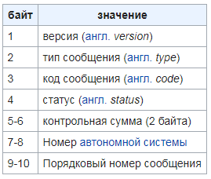

EGP
EGP (сокр. от англ. Exterior Gateway Protocol, протокол внешнего шлюза) — устаревший протокол обмена информации между маршрутизаторами нескольких автономных систем. Разработан в 82-84 годах. Впоследствии был заменён на BGP.
Типы сообщений
- Request — Запрос на захват соседей и/или установки настроек опроса
- Confirm — Подтверждение запроса request
- Refuse — Отказ в захвате соседей
- Cease — Запрос на перезахват соседей
- Cease-ack — подтверждение перезахвата соседей
- Hello — проверка доступности соседей
- I-H-U — ответ на запрос о доступности (англ. I hear you, я тебя слышу)
- Poll — запрос на обновление информации о доступности сети
- Update — обновление информации о доступности сети
- Error — ошибка
Формат заголовка сообщения
